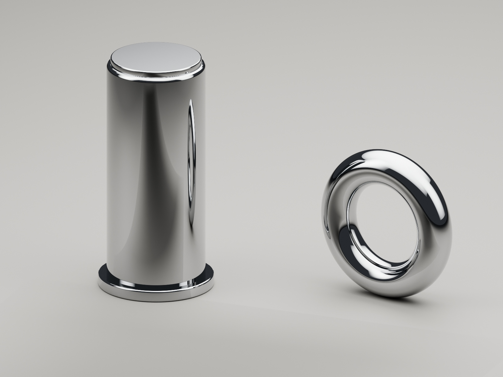
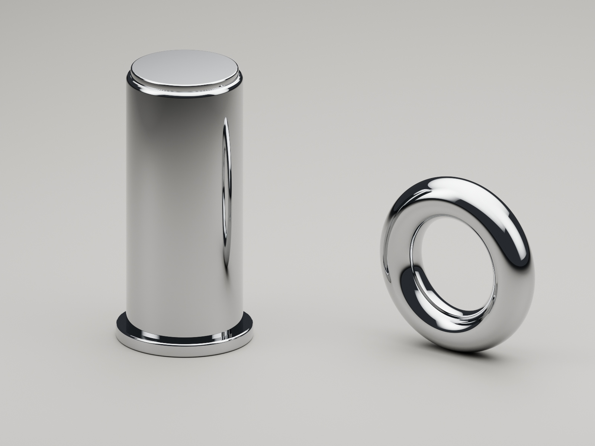

3D / Material studies
Blender polished chrome ↗Cycles · Original geometry
Polish is a
reflection.
Sharpness comes from the finish. Depth comes from what the metal sees.
Roughness 0.035 sharpens the reflection, but the broad grey floor remains visible in the metal.

